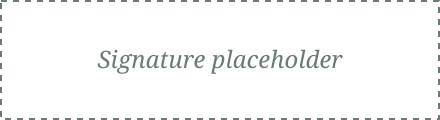

The Brazilian Center-West is one of the country’s most important agricultural regions, and the Cerrado Biome is central to its soybean production. Yet the insects, fungi, and nematodes that threaten this crop can cause serious losses. Reliance on chemical pesticides can also select for resistant pests and create risks for people and the environment. We are here to help develop more sustainable ways to protect these crops.
Our research group brings together graduate programs at the Universidade Católica de Brasília, Universidade Estadual de Goiás,
and Universidade Católica Dom Bosco, alongside SoluBio Tecnologias Agrícolas.
Together, we prospect and characterize bacteria and fungi, then test their potential against key soybean pests and pathogens in laboratory, greenhouse, and field studies.
Our purpose is to turn this shared research into effective, reliable microbial bioinputs and biodefensives for soybean farming. By working across institutions and with an agricultural technology company, we aim to connect scientific discovery with practical products that farmers can use to protect their crops while supporting more sustainable production in the Cerrado.
Maria Sueli Soares Felipe

Research Group Coordinator